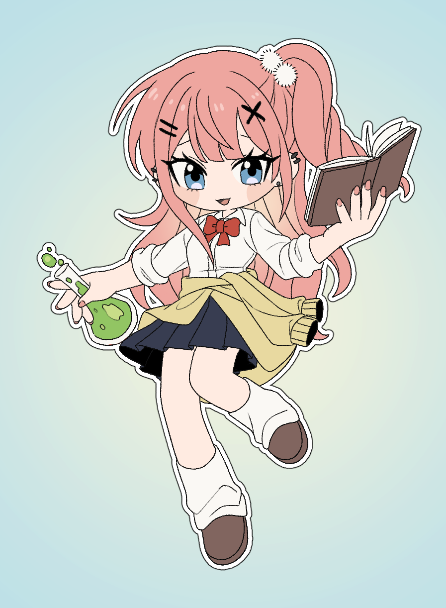
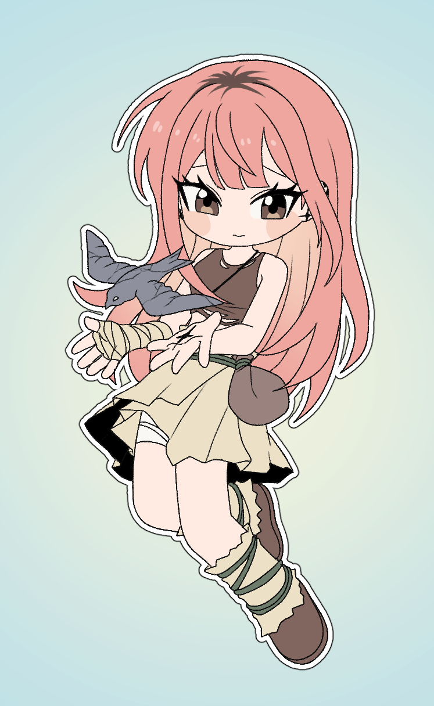

이와사키 레이나
최근 수정 시각: 2026-06-28 13:34:49
1. 개요
2. 설정화
 |
 |
| 2019년 | 5647년 이후 |
3. 특징
3.1. 외모
석화 전에는 갸루의 모습을 하고 있다. 코갸루/시로갸루 계열인 듯. 헤어스타일과 메이크업은 자주 바뀌는 편이다. 쿨 핑크나 애쉬 핑크 컬러로 염색하는 것을 좋아하지만 물이 금방 빠져서 주변인들은 레이나의 머리색을 코랄 핑크로 기억한다. 화려한 탈색모에 헤어 액세서리, 컬러 렌즈, 피어싱, 짙은 화장으로 생활지도에 걸리는 일이 잦다.[3] [4] 석화 당시에도 화려한 헤어스타일과 메이크업을 하고 있었다. 3000년 넘는 세월 동안 석화 상태로 있게 되면서 컬러 렌즈와 짙은 메이크업은 사라졌다. 신기하게도 머리카락은 염색모였음에도 불구하고 석화 부활 후에도 같은 색으로 남아있다. 머리카락 일부는 검은색 자연모로 자라는 듯. 석화 당시에 귀와 머리를 감싸고 웅크린 자세를 했기 때문에 금속 피어싱과 바디체인 일부는 남아있다. 긴 세월 동안 금속 액세서리와 석화된 피부 표면이 마찰하면서 표면에 흠집이 생겼는지, 귀와 손바닥에 석화 흔적이 남았다.
3.2. 성격
초베리큐티갸루!!!!
4. 작중 행적
4.1. 2019년
고등학교 3학년이자 과학부 소속의 학생이다. 동아리 입부 신청서를 검토하던 중 달에 가겠다는 원대한 목표를 '내일 놀이공원에 가겠다' 수준의 일상적인 어조로 적어놓은 이시가미 센쿠의 신청서를 발견하고 크게 당황한다. 첫 대면 당시 센쿠가 누구에게나 "어이, 테메!"라고 부르는 것을 보고 '저 싸가지는 대체 뭐지?'라고 생각한다. 그러나 센쿠의 거친 언행 속에 숨겨진 압도적인 과학적 지식과 열정을 곧바로 알아챘고, 이후 흥미를 느끼며 그를 지켜보기 시작한다. 며칠 뒤 신입생 환영회 겸 야간 천체 관측에 참여한다. 모두가 야식과 잡담에 열을 올릴 때 밤하늘을 관찰하기 위해 밖으로 나온 레이나는 그곳에서 먼저 별을 보고 있던 센쿠와 마주치게 된다. 단둘이 별과 우주에 대해 깊이 있는 대화를 나누며 서로의 가치관을 공유하게 된 이 사건을 기점으로 레이나는 센쿠를 과학자로서 전적으로 신뢰하고 응원하게 된다. 센쿠 역시 레이나를 '대화가 꽤 잘 통하는 녀석'이라며 인정하기 시작한다. 이후 둘은 방과 후 공터에서 실험을 이어가거나 연락을 주고받으며 급속도로 가까워진다. 2019년 5월, 레이나는 석화 상태의 제비를 발견한다. 사태의 심각성을 느낀 레이나는 제비 석상을 수집하여 표면을 관찰하고, 센쿠와 며칠 밤을 새워가며 해당 현상을 연구한다. 2019년 6월, 정체불명의 초록색 광선이 지구를 덮친다. 당시 화장실에서 메이크업을 수정하고 교실로 돌아가던 중이었던 레이나는 멀리서 사람들이 돌처럼 굳어가는 것을 보고 곧바로 머리를 감싸 쥐며 웅크린 방어 자세를 취한다.
4.2. 석화 중
석화 이후 레이나는 전 세계를 덮친 초록색 광선과 제비 석화 사건의 연관성을 직관적으로 파악한다. 전 지구적 규모로 제비가 석화되었다는 사실로부터 인류 역시 전원 석화되었을 것이라는 결론에 도달한다. 어떻게 생명체가 돌이 될 수 있는지, 돌이 된 상태에서 의식을 유지할 수 있는 원리가 무엇인지, 초록색 광선의 정체는 무엇인지, 제비가 석화되었을 때는 왜 초록색 광선이 보이지 않았는지 생각하며 혼란스러워 한다. 석화 초기에는 정확한 시간의 흐름을 측정하려 시도했으나 4년 정도가 흐른 시점에서 오차가 너무 커졌을 것이라고 확신하며 시간 측정을 포기한다. 석화 광선의 정체, 기초적인 과학 이론, 아포칼립스 상황에서의 생존법, 그리고 센쿠의 생사 여부 등을 떠올리며 의식 유지에 총력을 다했다.
4.3. 5647년 이후
5647년 9월, 레이나는 동굴 근처에서 깨어난다. 석화 중 시간 측정을 포기했기에 레이나 본인은 정확한 날짜와 시간을 알 수 없었지만, 주변 환경 변화를 관찰하며 대략적인 시기를 추정한다. 겨울이 오기 전까지 약 3개월밖에 남지 않은 촉박한 상황 속에서, 레이나는 오로지 생존과 겨울 대비에만 집중했다. 운이 따라준 덕분에 혹독한 첫겨울을 무사히 넘기는 데 성공한다. 5649년, 생활이 어느 정도 안정되자 레이나는 석화된 센쿠를 찾기 시작한다. 센쿠의 석상을 발견한 레이나는 그를 자신의 거처로 옮겨온다. 제비 연구 경험과 석화 당시의 기억을 토대로 부활액 제작에 착수한다. 센쿠가 훗날 완성하게 될 석화 부활액과 유사한 아이디어에 도달하며 과학적 역량을 보여주었으나, 부활액을 완성하지 못한 채 5662년에 사망한다. [5]
5. 인간관계
- 이시가미 센쿠: 레이나의 동아리 후배이자 친한 친구. 석화 이전에는 함께 연구하고 실험하며 시간을 보냈다. 처음에는 호기심과 동료애 정도였으나, 레이나는 점차 센쿠에게 호감을 느끼게 된다. 5647년, 레이나는 스톤월드에서 홀로 부활하여 죽을 때까지 센쿠를 부활시키기 위한 연구를 한다. 이 과정에서 레이나는 심한 외로움과 여러 차례의 멘탈 붕괴를 겪었다. 하루 종일 센쿠의 석상만 들여다본 탓인지 어느 순간 센쿠를 사랑하게 된다. 하지만 이 감정이 순수한 애정인지 외로움을 기반으로 한 뒤틀린 사랑인지는 누구도 모른다.
- 오오키 타이주: 센쿠의 친한 친구로, 자연스럽게 레이나와 친해지게 되었다.
센쿠와 다르게 레이나를 꼬박꼬박 선배라고 불러준다. 반면에 레이나는 타이주의 이름을 제대로 외우지 못해서 덩치라고 부른다.
센쿠가 그렇게 부르니까...타이주는 이 호칭에 대해 그닥 신경쓰지 않는다. - 오가와 유즈리하: 센쿠와 타이주의 친구. 타이주와 마찬가지로 레이나와 자연스럽게 친해지게 되었다. 귀여운 외모와 착한 심성을 가지고 있다. 단둘이 놀러 다닐 만큼 친한 관계는 아니지만 레이나가 꽤 아끼는 후배 중 한 명이다. 레이나는 일방적으로 유즈리하에게 데이트 신청을 한다.
- 하야시 미도리: 유즈리하의 오랜 친구로, 수예부 소속이다. 유즈리하 옆에 붙어 있다가 레이나의 눈에 띄었다.
미소녀 탐지 레이더레이나는 미도리를 너무 너무 너무 귀여운 존재로 생각하며, 꽤 아끼고 있지만 미도리가 부담스러워 할까봐 멀리서 흐뭇한 얼굴로 지켜보기만 한다.그게 더 무서울지도언젠가 유즈리하와 미도리를 데리고 최애 카페에 가서 '100억원이지만또먹고싶은큐티프리티말차딸기초코크레페'를 사주는 것이 레이나의 꿈. - 나나미 류스이: 미디어 속 유명인. 직접 만난 적은 없는 인물이다. 레이나는 뉴스나 유튜브 같은 곳에서 류스이에 대한 소식을 접했는데, 어린 나이에 레이싱 서킷을 만들었다든가 장 보러 갈 때 경비행기를 타고 다닌다는 이야기를 듣고 흥미를 느낀다. 꽤 인상깊었는지 모르는 남학생에게 공개 고백을 받았을 때 이상형은 집 앞에 F1 경기장을 만들어줄 수 있는 금발 꽃미남 재벌 2세라고 말한다. 물론 진심은 아니고, 고백을 거절당한 남학생이 레이나에게 센쿠를 좋아하고 있는 거냐고 묻자 대충 둘러댄 것이다.
- 아사기리 겐: 직접 만난 적은 없는 인물. 레이나는 겐을 TV에서 본 마술사 정도로 기억하고 있다.
겐이 쓴 'MAGIC PSYCHOLOGY'라는 책을 읽어보았다. 타이주나 미도리 같은 주변 친구들은 그 책을 가지고 있었는데, 센쿠가 악평을 하길래 궁금해서 빌려 읽었다고 한다.
개쓰레기책 - 시시오 츠카사: 직접 만난 적은 없는 인물. 대충 얼굴과 이름을 아는 정도의 인물이다.
- 첼시 차일드: 젊은 천재 지리학자로 유명한 인물이다. 레이나는 첼시의 논문들을 읽어본 경험이 있다. 직접 만나거나 사진을 본 적은 없고, 논문만 읽어보았기에 레이나의 상상 속 첼시의 이미지는 성숙하고 지적인 서양 미소녀 정도로 남아있다.
- 이시가미 마을 사람들: 레이나가 살아있을 땐 교류가 없었다. 레이나는 약한 체력 탓에 장거리 이동이 힘들었고, 주로 탐험한 곳은 이시가미 마을과 반대 방향이었기에 레이나는 마을의 존재조차 알지 못했다. 마을 사람들 중 일부는 레이나의 존재를 알고 있었지만 당시에 외부인 경계가 유독 심했기에 레이나 앞에 모습을 드러내거나 교류를 시도하는 일은 없었다. 거친 야생에서 홀로 살아남으며 '요술사' 같은 행위를 하는 레이나의 모습이나 다양한 금속과 약초가 들어있는 수집품은 마을 사람들, 그리고 훗날 이어지는 센쿠의 여정에 간접적인 영향을 준다.